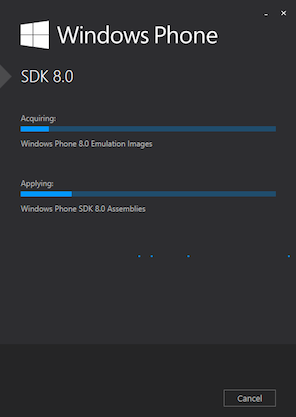
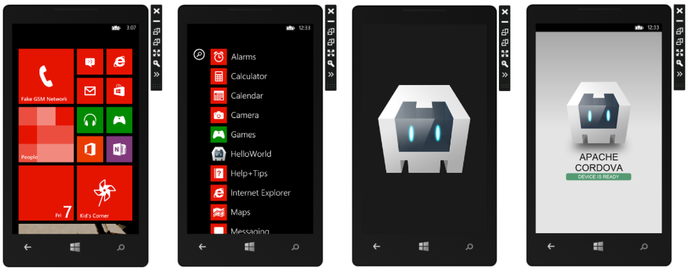
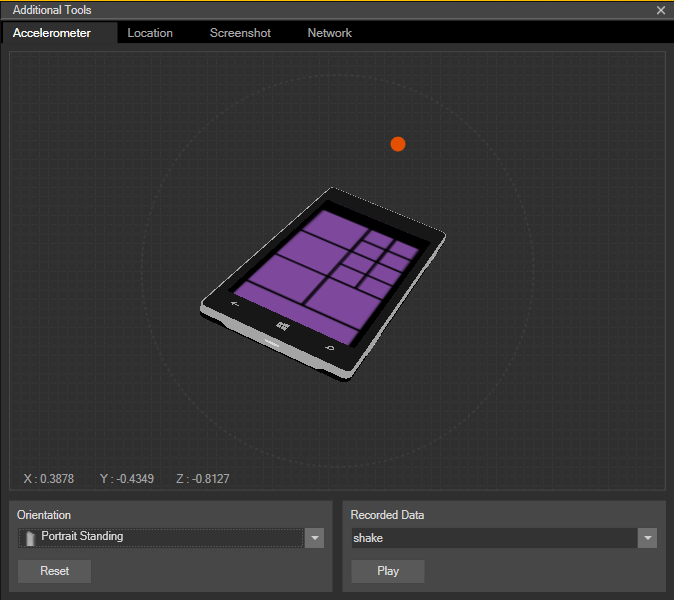
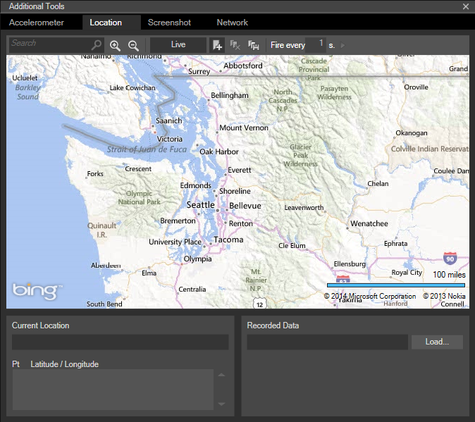
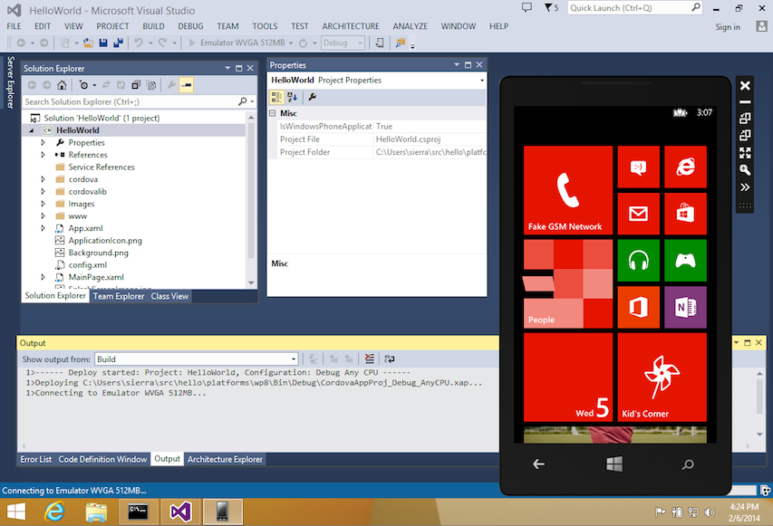

Windows Phone 8 Platform Guide
This guide shows how to set up your SDK development environment to deploy Cordova apps for Windows Phone devices. It focuses on Windows Phone 8, but provides additional details on how to support Windows Phone 7.
It shows how to use either Windows Phone-specific shell tools to generate and build apps, or the cross-platform Cordova CLI discussed in The Command-Line Interface. (See the Overview for a comparison of these development workflows.) This section also shows how to open Cordova apps so that you can modify them within Visual Studio. Regardless of which approach you take, you need to install the Windows Phone SDK, as described below.
See the following for details specific to the Windows Phone platform:
For the Windows Phone 8 platform, the Cordova WebView relies on Internet Explorer 10 as its rendering engine, so as a practical matter you can use IE10's powerful debugger to test any web content that doesn't invoke Cordova APIs. The Windows Phone Developer Blog provides helpful guidance on how to support IE10 along with comparable WebKit browsers.
Requirements and Support
You need the following:
A 64-bit version of Windows 8 Pro, either an installation disk or an ISO disk image file. An evaluation version is available on the Microsoft Developer Network. The Pro version is necessary to run the device emulator.
The Windows Phone SDK.
To develop Cordova apps for Windows Phone devices, you may use a PC running Windows, but you may also develop on a Mac, either by running a virtual machine environment or by using Boot Camp to dual-boot a Windows partition. Consult these resources to set up the required Windows development environment on a Mac:
VMWare Fusion: To set up the Windows 8 virtual machine, follow the instructions provided by the Microsoft Developer Network, then see Configuring VMWare Fusion for information on preparing the virtual environment to run the emulator bundled with the SDK.
Parallels Desktop: To set up the Windows 8 virtual machine, follow the instructions provided by the Microsoft Developer Network, then see Configuring Parallels Desktop for information on preparing the virtual environment to run the emulator bundled with the SDK.
- Boot Camp: To set up the Windows 8 partition, follow the installation instructions provided by the Microsoft Developer Network.
If you are developing on a PC, its processor must support virtualization (VT-x on Intel) and Second Level Address Translation (SLAT). Consult Intel's list of supporting processors. Virtualization is typically disabled by default, so you need to enable it in your BIOS settings. The PC should have at least 6.5GB of free hard disk space, and 4GB of RAM.
Using Cordova Shell Tools
If you want to use Cordova's Windows Phone-centered shell tools in conjunction with the SDK, you have two basic options:
Access them locally from project code generated by the CLI. They are available in the
platforms/wp8/cordovadirectory after you add thewp8platform as described below.Download them from a separate distribution at cordova.apache.org. The Cordova distribution contains separate archives for each platform. Be sure to expand the appropriate archive,
cordova-wp8\wp8in this case, within an empty directory. The relevant batch utilities are available in the top-levelbindirectory. (Consult the README file if necessary for more detailed directions.)
These shell tools allow you to create, build, and run Windows Phone apps. For information on the additional command-line interface that enables plugin features across all platforms, see Using Plugman to Manage Plugins. See Application Plugins for guidance on how to develop plugins, and Windows Phone Plugins for details specific to the Windows Phone platform.
Install the SDK
Install the latest version of the Windows Phone SDK from the Downloads area of dev.windowsphone.com. You may also install more recent emulator update packages.

Create a New Project
At this point, to create a new project you can choose between the cross-platform CLI tool described in The Command-Line Interface, or the set of Windows Phone-specific shell tools. From within a source-code directory, here's the CLI approach:
> cordova create hello com.example.hello HelloWorld
> cd hello
> cordova platform add wp8
Here's the corresponding lower-level shell-tool approach:
C:\path\to\cordova-wp8\bin\create.bat C:\path\to\new\hello com.example.hello HelloWorld
Build the Project
If you are using the CLI in development, the project directory's
top-level www directory contains the source files. Run either of
these within the project directory to rebuild the app:
> cordova build
> cordova build wp8 # do not rebuild other platforms
If you are using the Windows Phone-specific shell tools in
development, there is a different approach. Once you generate the
project, the default app's source is available in the
projects\wp8\www subdirectory. Subsequent commands are available in
the cordova subdirectory at the same level.
The build command cleans project files and rebuilds the app. The first
example generates debugging information, and the second signs the apps
for release:
C:\path\to\project\cordova\build.bat --debug
C:\path\to\project\cordova\build.bat --release
The clean command helps flush out directories in preparation for the
next build:
C:\path\to\project\cordova\clean.bat
Deploy to Emulator
At this point you can use the cordova CLI utility to deploy the
application to the emulator from the command line:
> cordova emulate wp8
Otherwise use the alternate shell interface:
C:\path\to\project\cordova\run
By default, the run script invokes the emulator flag, and accepts
additional build flags, for which --debug provides the default:
C:\path\to\project\cordova\run --emulator --debug
C:\path\to\project\cordova\run --emulator --release
C:\path\to\project\cordova\run --emulator --nobuild
The emulator launches a device image with the app installed. From the home screen, navigate to the apps panel to launch the HelloWorld app. This shows the app launching with its splash screen followed by its main interface:

The emulator's basic controls on the top-right of the device screen allow you to toggle between portrait and landscape orientation. The >> button opens more controls that allow you to test more complex orientations and gestures:

These advanced controls also allow you to modify the device's location or to simulate sequences of movements:

Deploy to Device
Before testing your application on a device, the device must be registered. Consult Microsoft's documentation for details on how to deploy and test on Windows Phone 8. Also, make sure the phone is connected to the computer, and the screen is unlocked.
Then run the following CLI command to run the app on the device:
> cordova run wp8
It corresponds to this lower-level shell command:
C:\path\to\project\cordova\run --device
Alternately, if you are working in Visual Studio, select Windows Phone Device from the drop-down menu at the top, then press the green Play button nearby or else type F5.
Modify the Project in the SDK
Once you build a Cordova app as described above, you can open it with
the SDK. The various build commands generates a Visual Studio
Solution (.sln) file. Open the file to modify the project within
Visual Studio. The web-based source code is available within the
project's www directory. Along with other tools the SDK provides,
the control below the menu allows you to launch the app in a Windows
Phone emulator:

Consult the Overview for advice on how to use Cordova's command-line tools or the SDK in your workflow. The Cordova CLI relies on cross-platform source code that routinely overwrites the platform-specific files used by the SDK. If you want to work within the SDK, use the lower-level shell tools as an alternative to the CLI.